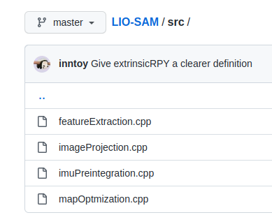
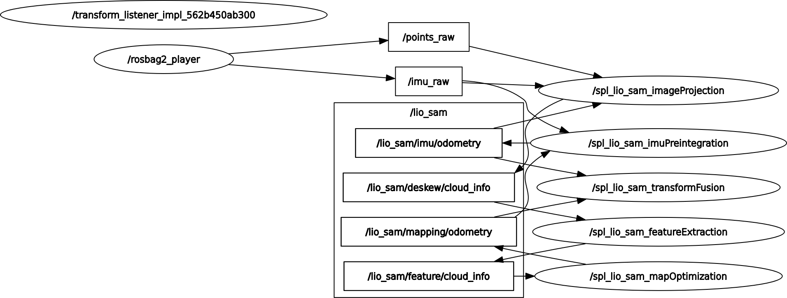
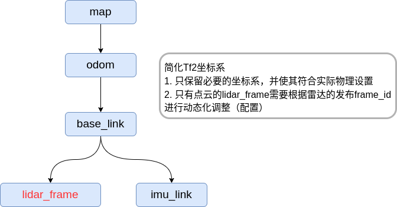
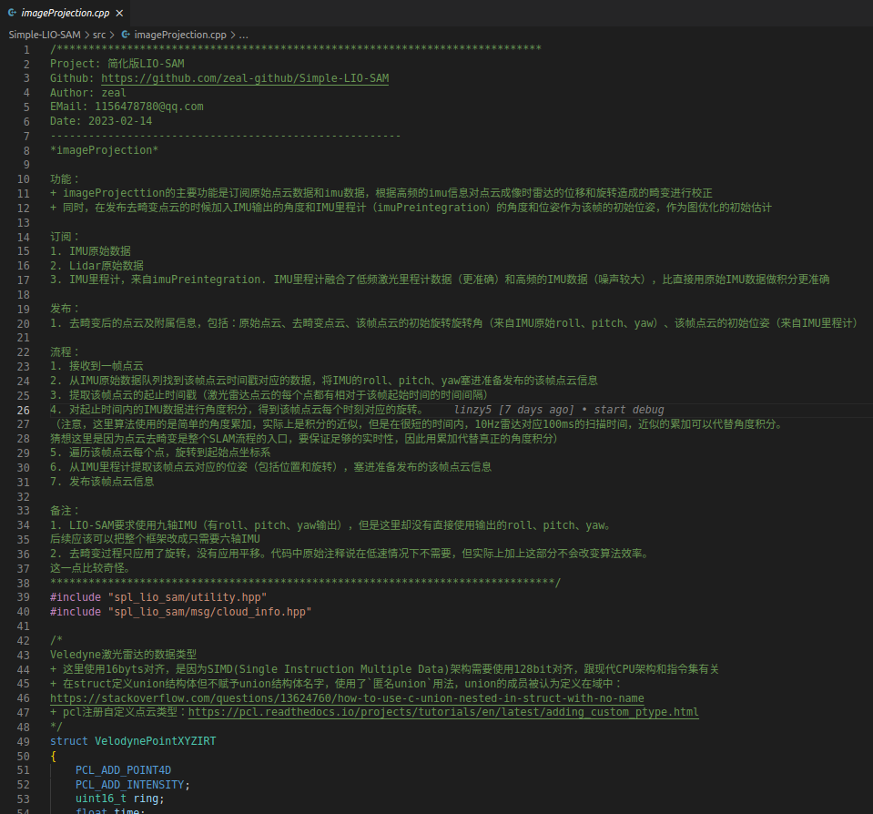
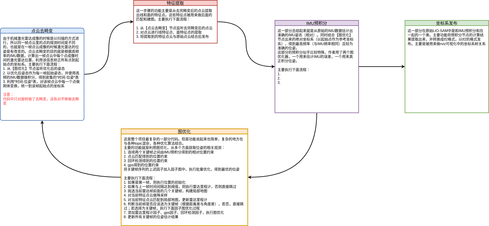
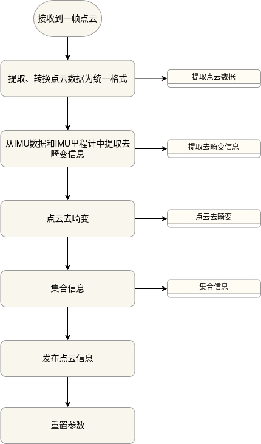
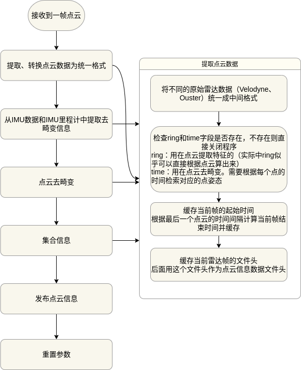

Simple-LIO-SAM——项目简介
- ⭐ Zeal's Blog
- 🛠 知乎专栏
- 🌀 项目仓库
LIOSAM介绍
LIOSAM（Tightly-coupled Lidar Inertial Odometry via Smoothing and Mapping），紧耦合激光——惯性里程计历程方法。 作者TixiaoShan是SLAM届大神，在LIOSAM之前发表过LeGO-LOAM，在LIOSAM之后发布了LVI-SAM，在LIOSAM基础上又加入了语义定位因子。 由于网上关于LIOSAM的解读已经有很多了，这里不会进行太过详细的复述，具体的内容解析会放在后面讲解代码的时候慢慢仔细阐述。
简单来说，LIOSAM整体的框架与其他方法区别在与： 1. 使用因子图作为后端优化框架，将IMU预积分与雷达点云匹配及回环检测等紧耦合 1. 使用当前帧-局部地图匹配而不是对全局地图匹配来加速点云匹配速度 1. 基于位置关系选择回环帧，并使用点云匹配计算回环因子 1. 使用高频IMU并进行简单积分对点云做运动畸变校正
另外，LIOSAM作者的工程功底很好，LIOSAM代码库被github上很多SLAM开源项目作为code base
本项目目的及特点介绍
LIOSAM源代码虽然不能说庞大，甚至可以说简单，因为整个代码库主要只要5个文件。  但是里面每个模块都通过ROS的topic与其他模块有紧密的联系。 整个的流程对新手十分不友好，下图是LIOSAM原本运行时的rqt_graph
第二个复杂之处在与LIOSAM框架设计到的知识点和工具较多，至少要熟悉ROS,gtsam,pcl几个库，算法层面需要熟悉点云匹配、IMU积分、因子图、三维转换等。 对于熟悉SLAM的人来说可能较为简单上手，但是对于新入门的人来说则一开始会一头雾水。
基于上述这些原因，笔者进行了SPL-LIO-SAM项目，希望能够以最大幅度帮助初学者理解LIOSAM框架及里面的算法细节。 本项目对LIOSAM做了如下改进
基于最新的ROS2-humble实现
虽然LIOSAM源码中有一个ros2分支，但该分支的维护者并不是原作者，而且已经长时间没有人维护，且该分支存在一些bug没有被修复。为了能够在进行本项目的学习过程中 熟悉最新的ROS2框架，笔者在LIOSAM的ros2分支基础上，修复了存在的bug，同时将功能较为独立的Transformfusion类抽取成独立的类。
为了便于上手及部署，笔者同时准备了适配的docker镜像供学习者使用。
简化
话题发布的简化
LIOSAM原始代码中有很多中间结果的发布，这些中间结果可以用来可视化及调试程序，但是对于学习者和开发者而言不仅意义不大，而且会在初始学习源码阶段误导学习者。 本项目在话题发布上进行大幅度简化，简化后的设计如下： 
简化后运行时的rqt_graph: 
坐标系简化
LIOSAM中实用的坐标系并不复杂，但是作者提供的urdf包含了太多为了兼容性考虑的坐标系，这些坐标系对于实际运行和理解并没有用。因此，本项目基于ROS对坐标系的约束，将 坐标系关系树简化为如下： 
保留算法及定义完整性
虽然本项目去除了很多非必要话题，同时对于一些非必要代码也进行了简化，但对一些学习算法有帮助的细节依旧保留。比如激光里程计在发布的时候有mapping/odometry和mapping/odometry_incremental两个话题，两个话题虽然类似但是背后却有很不同的函数，但同时两者合一又不影响算法的运行。因此采取的做法时在代码中保留这部分代码，同时加以解释，但发布时只发布其中一个话题。
完善的注释及流程图
网上其实对LIOSAM源码的注释并不少，比如LIO-SAM-note和LIO-SAM-DetailedNote，还有一些blog也对源码做了解释，但是都不太完美，同时缺少流程性的组织。本项目借鉴了一些开源项目的注释，并加以完善，可以说，本项目是目前对LIOSAM注释最完善的开源项目。 
为了最为清晰的展示LIOSAM算法不同模块的流程，该项目还对各个模块流程进行梳理，建立了完善的流程图设计   
后续章节
- 节一：开发环境搭建及运行
- 节二：总体流程及utility文件
- 节三：激光雷达运动畸变矫正模块
- 节四：点云特征提取模块
- 节五：Gtsam快速认识
- 节六：IMU预积分模块
- 节七：激光里程计模块
- 节八：坐标系发布模块